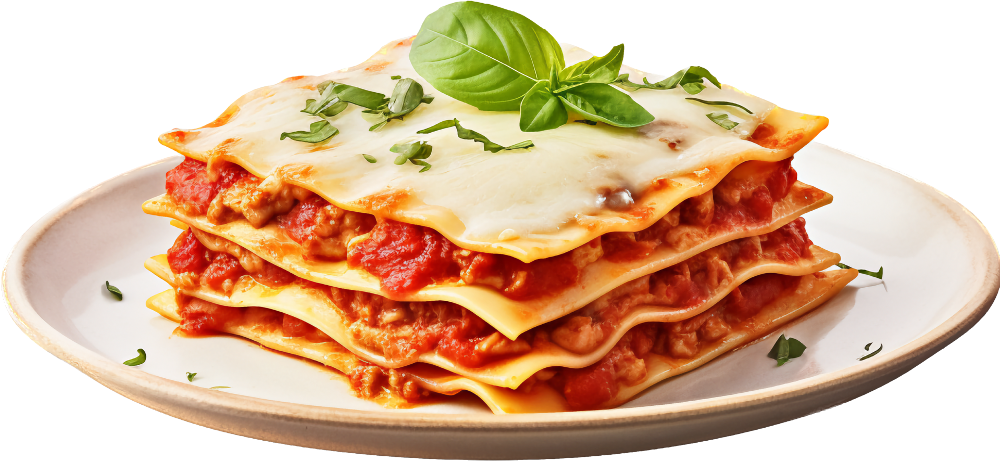

Lasagna

Description
This is a homemade lasagna recipe with a meaty, made from scratch
tomato sauce and a deliciously cheesy filling.
A more traditional homemade recipe filling would be made with ricotta
but this recipe calls for a blend of small-curd cottage cheese and Paremsan.
Serve with a leafy green salad and crusty garlic bread
Ingredients
- Meat: 1/2 lbs ground pork, 1/2 lean ground beaf.
- Canned tomatoes: A can of tomato sauce and a can of crushed tomatoes.
- Fresh herbs: two tablespoons of parsely and one crushed clove of garlic.
- Sugar: A dash of sugar.
- Spices and seasonings: dried brasil, dried oregano, salt and black pepper.
- Noodles: Uncooked noodles
- Cheese: cottage cheese,Parmesan and shredded mozzarella.
- Eggs: 2 eggs.
Steps
- Cook the meat: Cook the ground meat in a skillet until browned and crumbly. Add the onion and continue cooking until it's translucent. Stir in the canned tomato products, half of the parsley, garlic, basil, 1.5 teaspoons of salt, oregano, and sugar.
- Cook the noodles:Boil the lasagna noodles in lightly salted water until they're al dente.
- Make the cheese layer:Mix cottage cheese, Parmesan cheese, eggs, the remaining parsley, the remaining salt, and pepper in a bowl.
- Assemble the lasagna: Layer the ingredients according to the recipe (starting with sauce and ending with mozzarella) until the lasagna is assembled.
- Bake the lasagna Cover with foil and bake in the preheated oven for about half an hour. Remove the foil and continue baking until the top is golden brown.